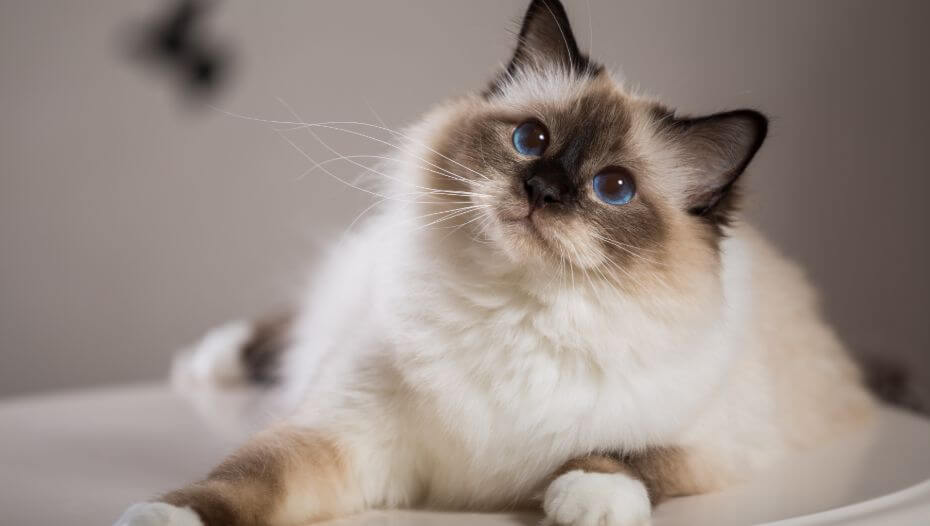

×

Birman Cat
The Birman, like other "color point" cats, displays a soft, pale cream to white coat covering its body, while its face, ears, legs, and tail showcase colored points. This semi-long-haired feline boasts a luxuriously silky coat, striking blue eyes, and pristine white feet, featuring gloves on the front paws and socks on the back